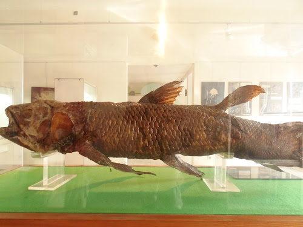

Comorian is a Bantu language spoken on the Comoros Islands and Mayotte in the Indian Ocean. There are also some speakers in Madagascar and Réunion. Comorian is related to Swahili and is sometimes known as Comores Swahili.In the Comoros, the official languages are French, Arabic and Comorian (shikomori). There are 4 variants of Comorian, one for each island. In Mayotte people speak shimaore, in Grande Comore people speak shingazidja, in Moheli people speak shimwali and in Anjouan people speak shindzuwani.
FASHION

FAMILY VALUES
FOOD
AGRICULTURE
MUSIC

MUSEUMS
HISTORICAL EVENTS